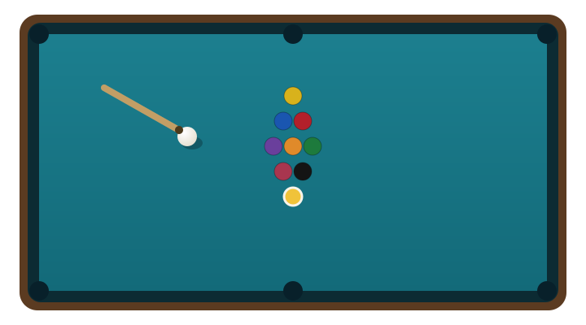

Straighten the shot
Most missed pots are missed by a couple of millimetres, not by aiming badly. Check the cue ball, the object ball and the pocket are on one straight line before you stroke.
In everyday use, "billiards" at a club means pool. We play English 8-ball as the default game, with 9-ball and 10-ball tables and a straight pool table available on request. All three use the same balls and the same table; what changes is the objective.
The standard pool table is nine feet long. Smaller tables are easier to play on but harder to pot from; larger tournament tables are demanding. Our pool tables sit in the middle, at the size most leagues and competitions use.
| Playing area | 2540 mm × 1270 mm (100 in × 50 in) |
|---|---|
| Ball diameter | 57.15 mm (2¼ in) |
| Pockets | Six, about 50 mm (2 in) at the corners and middles |
| Rail height | Typically 63.5% of ball diameter, about 36 mm |
| Spots | Foot spot and head spot used for racking and ball in hand |
Smaller pockets than snooker, larger balls: that is the whole difference in feel. You pot more freely but lose balls more often to the jaws of the pocket.

If you have played one and never tried the other, this table explains what changes on the same table.
| Feature | Snooker | Pool |
|---|---|---|
| Table | 12 ft (3569 × 1778 mm) | 9 ft (2540 × 1270 mm) |
| Ball diameter | 52.5 mm | 57.15 mm |
| Objective | Score the most points in one frame | Clear the table in a legally chosen order |
| Balls on the table | 15 reds, 6 colours, cue ball | Object balls numbered 1–15 plus the cue ball |
| Colours after potting | Re-spotted while reds remain | Stay down for the rest of the frame |
| Typical frame length | About 45 minutes to 2 hours | About 15 to 40 minutes |
| Main skill | Position and safety play | Potting under combination pressure |
This is the game most people mean when they say "pool". It is played with the fifteen object balls, the cue ball, and the black 8 as the deciding ball.
Nine numbered balls, one simple rule: always hit the lowest numbered ball on the table first. You do not need to nominate the pocket, so the game favours speed and shape play rather than long planning.
Ten-ball is 9-ball with two differences that make it more tactical: you nominate the pocket, and it is harder to get lucky. Legally pocketing the 10 wins the rack, and you cannot scratch on the shot that wins it.
The classic American pool game and still a good club option on a quiet table. Players take turns at one nominated object ball and continue scoring until they miss, then the next player takes over.
| Foul | Result |
|---|---|
| Cue ball potted (scratch) | Foul; ball in hand for the opponent (anywhere on the table in 8-ball, behind the head string in straight pool) |
| No ball hit, or wrong ball hit first | Foul; ball in hand |
| Potting a ball not on | Foul; the potted ball is spotted in 8-ball, or stays down in 9-ball and 10-ball |
| Cue ball off the table | Foul; ball in hand |
| Ball jumping off the table | Foul; ball in hand, and the ball is spotted or stays down by the game rules |
| Touching a ball by hand | Foul; ball in hand |
| 8-ball potted early, or scratch on the 8 | Loss of the frame |
Our house rules, including which pocket may be used for the black and how late concessions are handled, are printed on the card attached to each pool table.
Three habits do most of the work, and none of them require strength or expensive kit.
Most missed pots are missed by a couple of millimetres, not by aiming badly. Check the cue ball, the object ball and the pocket are on one straight line before you stroke.
Getting the cue ball to stop, draw back or move sideways after contact is worth more than raw potting. It decides the next shot, and the next shot decides the frame.
Where will the cue ball finish? If you cannot answer that before you shoot, you are choosing a pot at random.
Cue ball control guide Avoiding common pool fouls Book a coaching session